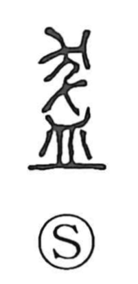

鉢

Uncategorized
Kun: | On: hachi, hatsu
bowl ・ pot
Explanation
A phono-semantic character: in early form it appears as 盔, with 灰 supplying the sound for the on reading while the graph points to a vessel. The form 鉢 in Japan is an abbreviation of 鉢多羅, a transcription of the Sanskrit pātra, the alms bowl. Hence 鉢 came to denote the bowl used by Buddhist ascetics and the vessel monks and nuns carry when going on mendicancy (takuhatsu). In Japanese usage hachi also names the crown of the head (giving hachimaki, the headband tied across the brow), and by extension any wide-mouthed vessel such as table bowls, the hibachi fire bowl, and flowerpots.